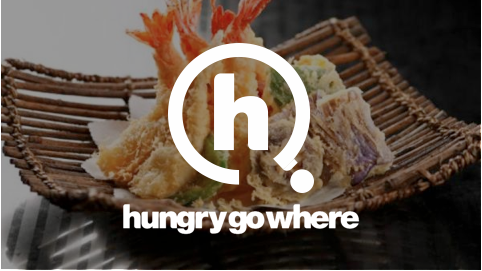
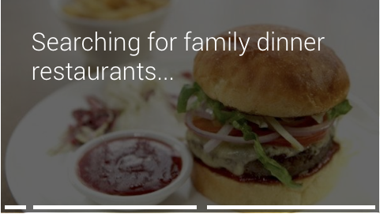
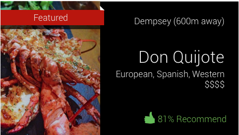
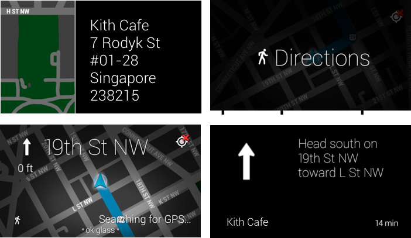
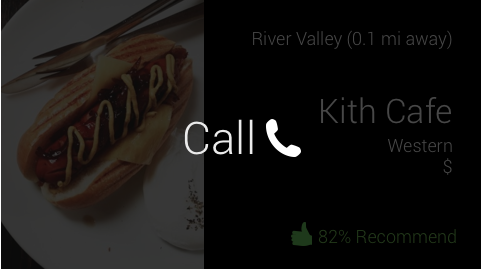
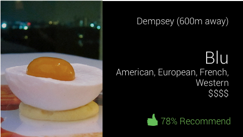

Project: Creating the Google Glass prototype for one of the largest food review mobile applications in South East Asia.
My role: Visual Design, User Experience and User Interaction Design
Where and when: Silica Labs Software Corp | December 2013 - March 2014
HungryGoWhere is a food and restaurant review website used in countries like Singapore, Malaysia, Hong Kong, Vietnam, Cambodia and Australia. In October 2013, the HungryGoWhere mobile app recorded 600,000 downloads with 100,000 monthly active users. The app is used to gather information on food establishments and a portal where these businesses can grow their online profile. HungryGoWhere was developed in 2004 and was acquired in 2012 by Singapore Telecommunications Limited. SingTel reached out to us to build and prototype an interactive experience with HungryGoWhere through Google Glass.
For this project, we:
The biggest challenge was reimagining the user experience for a heads-up display. The mobile app experience is very similar to Yelp where users can search by proximity, cuisine, rating and more. With a hands-free device, it was important to reduce the application to the absolute necessities for the app to
     This is the final document of full color mockups I created for the final presentation. There are [2] ways a user can access and use the HungryGoWhere app on Google Glass: By voice activation or by touch activation. We also considered opportunities for advertising and monetization for the future.